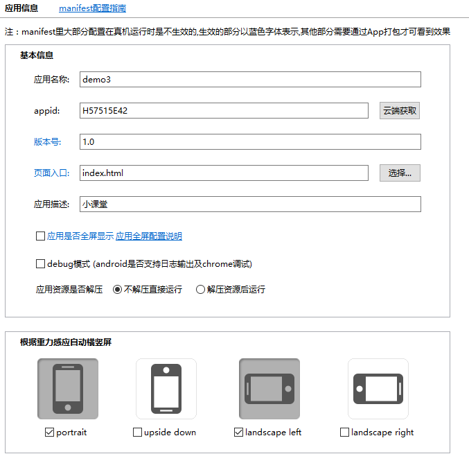

【JS-task04】如何使用HBuilder打包app？
小课堂【武汉第140期】
分享人：王力
目录
1.背景介绍
2.知识剖析
3.常见问题
4.解决方案
5.编码实战
6.扩展思考
7.参考文献
8.更多讨论
1.背景介绍
什么是HBuilder？
HBuilder是DCloud（数字天堂）推出的一款支持HTML5的Web开发IDE。HBuilder的编写用到了Java、C、Web和Ruby。HBuilder本身主体是由Java编写，它基于Eclipse，所以顺其自然地兼容了Eclipse的插件。 快，是HBuilder的最大优势，通过完整的语法提示和代码输入法、代码块等，大幅提升HTML、js、css的开发效率。 当知道如何创建HTML5 APP项目，以及APP页面如何调试后。接下来，需要考虑的就是HTML5 APP项目打包的事情。
2.知识剖析
Manifest.json文档
Manifest.json文件是5+移动App的配置文件，用于指定应用的显示名称、图标、应用入口文件地址及需要使用的设备权限等信息，用户可通过HBuilder的可视化界面视图或者源码视图来配置5+移动App的信息。 Manifest.json文件根据w3c的webapp规范制定，plus节点下内容为HTML5Plus扩展规范，其下包括iOS和Android子节点，内容来源分别为iOS和Android原生打包所要求的参数，用于对5+移动App打包为ipa或apk安装包进行配置。
应用信息配置
在HBuilder中创建“移动App”应用后后都会在工程下生成manifest.json文件，在“项目管理器”中双击即可打开。

HBuilder打开manifest.json文件后默认显示“可视化视图”，可配置应用的基本信息：
- 应用名称：App打包后在手机上桌面的快捷方式名称；
- appid：HBuilder appid（应用标识），在创建时分配的、以后不可改的标识。如用户手动修改ID打包时会提示参数错误；
- 版本号：应用的版本号
- 入口页面：应用启动后自动打开的第一个HTML页面，可填写本地html文件地址（相对于应用根目录）或网络地址（以http://或https://开头）。
-debug模式：不勾选打包后的apk不生成日志文件

可通过点击表示设备方向的按钮来选择设备支持重力感应旋转方向。 重力选择按钮可选择一个或多个，选择多个方向后，应用可按照指定方向显示应用页面，如只选中一个按钮，表示终端只支持一个方向显示页面内容。
点击下方的代码视图，切换代码视图，把设置的应用设置信息以json格式展现
点击“发行”-“发行为原生安装包”
可以勾选ios和Android的安装包;
ios选项：默认选择ipone和ipad版本，选择越狱包可以不需要苹果证书，如果是需要发布到苹果商店点选使用证书，在下方ios开发者证书把相应的描述文件和私钥文件上传好
Android选项：如果只是打包的应用是自己用的话可以选择DCloud公用证书，如果是需要发布到线上应用商店徐点选使用自有证书，在下方的Google开发者证书把相应的证书文件、密码上传上去
3.常见问题
应用的应用图标和启动图片设置
4.解决方案
设置应用图标只能上传png格式的图片，可以通过上传一张192x192的源图片，可以选择自动生成所有ios和Android上不同格式的应用图标

设置启动图片只能上传png格式的图片，选择ios和Android上不同尺寸的图片
5.编码实战
6.扩展思考
ios打包ipa：iOS开发环境，Mac OS、XCode；
Android打包apk：Android开发环境，使用eclipse和ADT；
7.参考文献
8.更多讨论
打包应用时的开发者证书怎么获取？
鸣谢:
感谢大家观看
by：王力